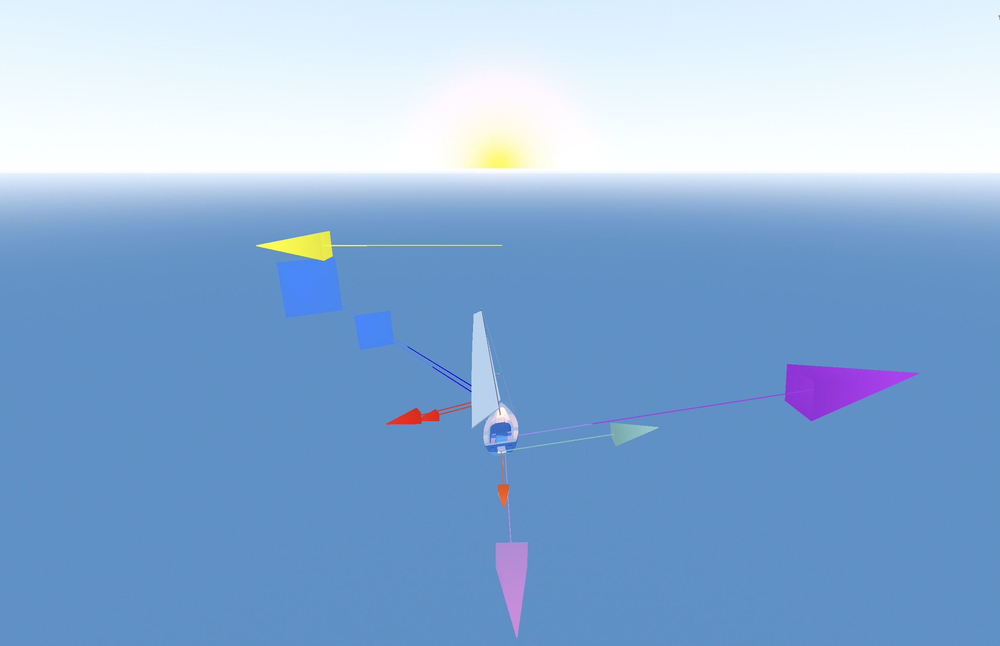
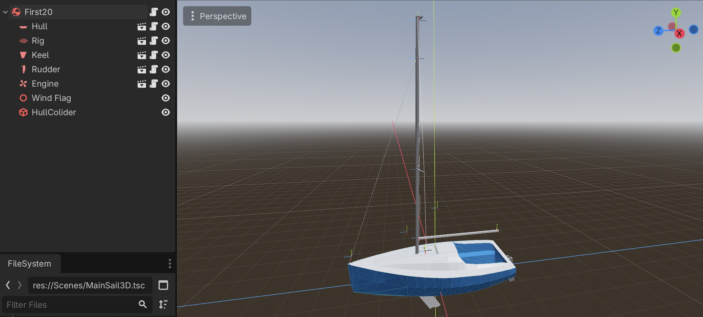
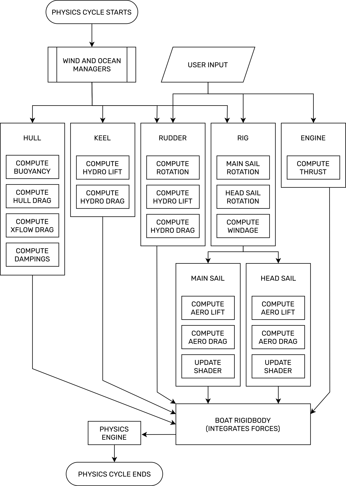
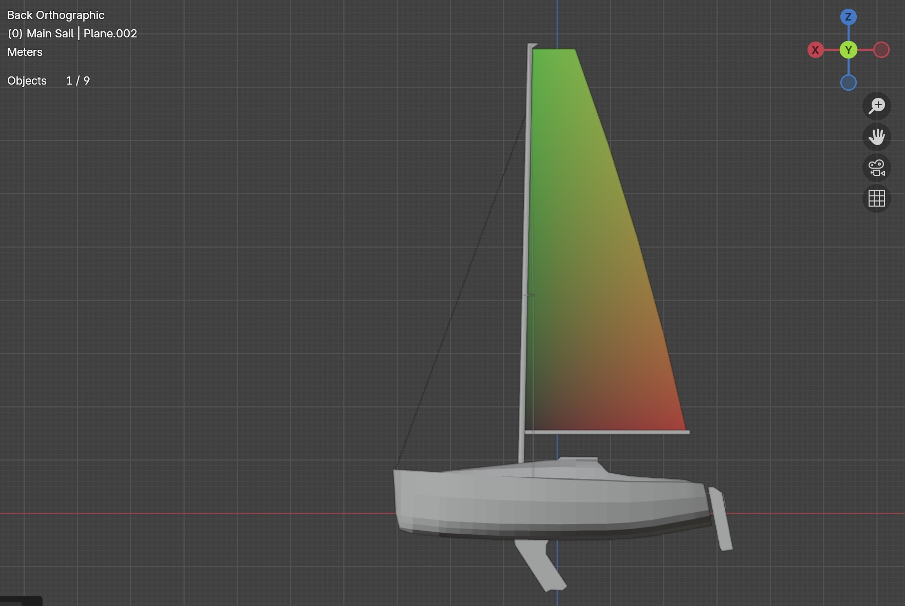

Sailing simulation in Godot
Born from the interest I developed in the physics behind sailing while on a sailing trip in Italy, this (WIP) project is an interactive, physics-based simulation in the Godot engine. The goal is to recreate the forces involved in the process of sailing in an environment the user can interact with.
In more precise terms: the program lets the user sail the boat realistically by simulating the aerodynamic interactions between the wind and the sails, the hydrodynamic interactions between the water and the appendages of the boat (keel and rudder), and the aerostatic and hydrostatic forces (such as buoyancy or windage).
The design choices
The philosophy behind the design of the simulation was to make a modular, interactive, physics-based, real-time system to replicate the feeling and dominant dynamics of sailing rather than a fully detailed, computationally expensive CFD simulation.
Why Godot? This choice lines up with the three core values above, and it is an environment where it is easy to iterate. Godot structures its workflow around scenes. Anything in it is a scene, and scenes can be embedded into other scenes through a tree structure. One can think of a scene as a class or object. A blueprint. Modularity then refers to scenes being comprised of components (or sub-scenes). Interactivity comes naturally as Godot is a game engine, making it easy to prototype interactive applications in it. And finally, its physics engine can integrate and solve the different forces that act on the sailboat in real time.
The physics of sailing
Before we delve deep into the structure of the project and discuss the codebase, let me quickly walk you through an overview of the physics involved in sailing. And don't worry! I assure you it won't be hard to understand.
In fact, a sailboat is very similar to an airplane, only turned sideways. The wings on an airplane work by generating an upwards force named lift when air flows along their profile. As a byproduct, they also produce drag, a force that is orthogonal to lift and parallel to the direction of the air flow. The sum of these two forces is the aerodynamic force acting on a wing.
Lift is the force that is responsible for an airplane taking to the skies, while drag slows it down. The reason why aircraft have the carefully designed shapes they do boils down to the interaction between these two forces. The goal is to maximize lift and minimize drag.
In sailing, the role of the wing is played by the sails, and lift now becomes a 'sideways' force. It can be visualized as a blue arrow in the video of the simulation above. Drag is represented by a red arrow, and it is now parallel to the apparent wind, the wind perceived by the boat.
To compensate for this sideways force, the other 'wing' of the boat is hidden underwater. The keel is responsible for the same job as the sails, using water as a fluid instead of air. In fact, as soon as the boat picks up speed relative to the water, the keel generates a hydrodynamic lift force in the direction opposite to the lift generated by the sails. This cancels out the sideways components, resulting in a forward force that drives the boat.
The same idea works to steer the boat by using the rudder. This time, the displacement of the rudder along the main axis of the boat makes the hydrodynamic lift generated by the rudder induce a torque that allows the boat to be steered.

In the image above the yellow arrow above the boat represents the wind direction, and the following forces are illustrated:
- Aerodynamic lift forces on the main and jib sails.
- Aerodynamic drag forces on the sails.
- Hydrodynamic lift generated by the keel.
- Hydrodynamic drag induced by the keel.
- Hydrodynamic lift generated by the rudder.
- Hydrodynamic drag induced by the rudder.
Crucially, this mechanism is what enables navigating upwind, and it is the reason we no longer see square sails aligned perpendicularly to the hull of a boat.
While these are the main forces involved in keeping the boat moving, there are additional static forces that are also present in the simulation. The interaction between the hull and the water surface, in particular, gives rise to buoyancy, viscous drag forces due to friction and shearing of the layers of water surrounding the boat, wave drag (a phenomenon due to which boats have an effective maximum speed) and 'crossflow drag' or lateral resistance (the interactions between the water surface and the geometry of the boat that make it track its course effectively).
Structure and simulation
The architecture of the system is based on splitting the boat into components that act independently in a physical sense. Each of these components is then responsible of detecting the physical state of the simulation at each step of the cycle, computing their response to it factoring in user input, and communicating it to the boat, after which it moves into the physics integrator (in our case the Jolt physics engine in Godot). This makes the system modular and easy to work on and troubleshoot.

Each component is a custom class (a data structure) that governs its behavior, and it materializes through a scene tree containing nodes whose purpose is to model the behavior of the real-life counterpart of the scene/component. In practical terms, the hull contains its own class script, the hull's mesh and the buoyancy pressure points and nodes that detect drag and crossflow drag forces; the rig contains its class script, the mast, boom, sail attachment points and sails; these contain their own scripts together with mesh information and centers of force application, as do the keel and rudder.
The boat itself is built on composition of components under a main class of type RigidBody3D, with the ability to interact with the physics engine in Godot and integrate the forces detected by each component through a specific set of custom instructions provided in the class definition.

In the image above you can see a flowchart of how the main loop of the simulation works and what every component is roughly designed to do. I will now dive deeper into exactly how each subsystem works and how it models the physical aspects discussed above. And then I will discuss the limitations I work with and what tradeoffs these entail.
Subsystems
Despite this being the most technically involved section, the main points are well synthesized and stripped of the technical mathematical and physical concepts. You can expect some basic equations and discussions about light optimization, or you can navigate to the next section (model limitations) to skip this part.
Sails
The sails that I considered in the simulation can be divided into two categories. Main sails and head sails. The main sail is the primary source of movement for the boat, while the head sail (in our case a jib) functions to channel airflow appropriately into the main sail, increasing its performance, and to act as a small boost.
Considering that the boat moves with velocity \( V_B \), and that the wind blows with velocity \( V_T \) (note that both of these quantities are vectors in three spatial dimensions), sails are in charge of computing the apparent wind \[ V_A = V_T - V_B ,\] the angle of attack \( \alpha \) with which the wind is coming at them, and the lift \(L\) and drag \(D\) forces generated by this interaction, \[ F = \frac{1}{2} \rho |V_A|^2 A C_F(\alpha), \quad F = L, D .\] To obtain wind information, we need the sails to communicate with a WindManager component. The quantity \( A \) is the area of the sail, whereas \( C_L(\alpha) , C_D(\alpha) \) are the lift and drag coefficients of the sail. Both of these are physical properties of a sail, and the lift and drag coefficients only be determined experimentally. And \( \rho \) is just the density of air.
This already highlights one compromise. While we can compute the area of a sail inside Godot by looping through the polygons that form its mesh before the simulation begins (as long as we keep a consistent, absolute scale), it is not possible to bypass the need to replicate the curves \( C_L(\alpha) \) and \( C_D(\alpha) \) from experimental data. This data is not easy to come by. In fact, sail design becomes a very relevant topic at this point: when sails are correctly trimmed, their shape depends on the point of sail the boat is navigating at. One can therefore not even adjust the coefficient curves for a specific NACA profile, as this may agree with the performance of the sail only for low angle of attack (AoA) regimes, and differ for high AoA regimes.
Furthermore, wind does not affect the sail equally uniformly over all of its surface, and neither is the length of the section of the sail across its height. So the lift and drag equations above are a simplified model that is useful in our case. But if one wishes to increase the granularity and precision of the simulation, one can discretize the sail by splitting it into sections of smaller height and trating them independently at the cost of increasing the computational cost of the simulation. This approach was implemented in the past, and it resulted in a better localization of the sail's center of effort, the point at which the sail experiences lift and drag (equivalent to what the center of mass represents for the weight). However, it did not represent a significant enough improvement given its computational cost.
The other main responsibility of the sails is to adjust their geometry in real time. Sails in real life are not rigid meshes and they get their curvature from the wind. Since we are not working in a fluid dynamics framework and since the current prototype considers only physical aspects relevant to the movement of the boat, the sails need to deform their geometry as the boom rotates via a vertex shader script. In our case this entails coming up with a coordinate mapping of the sail in the language of graphical programming.
To achieve such a mapping I decided to use vertex colors in the Blender sail models. This entails using the three dimensional representation of a color in red, green and blue coordinates (rgb(r,g,b)) as UV coordinates on the 3D model. Moreover, only two coordinates (r,g) are needed. This allows us to match the head, tack and clew (the attachment points of the sail to the rig) with their corresponding attachments in the rig class in real time. The color of the sail is then set to white in the material properties inside Godot.

The advantage of this method is threefold:
- It relies on a Python script which is easy and quick to execute and can handle any triangular-shaped sail.
- It leaves the UV layer untouched by isolating the vertex color and UV systems.
- Custom sail UVs are supported and UV maps can be designed without affecting the perceived geometry.
In summary, at each physics cycle we use a series of geometric methods to compute and save the aerodynamic forces acting on the sails and to deform the sail geometry to retain visual coherence (and to accurately simulate the surface of the sail in the future).
Keel and Rudder
The underwater appendages function much in the same way as the sails. They produce (hydrodynamic) lift and drag through the same equation as before, with \( \rho \) now being the density of the water they are flowing through, and with the angle of attack now being formed by the boat with respect to the water flow underneath it. This is why we require an OceanManager component to communicate with both the keel and the rudder, in case a water current might alter slightly this water flow.
This structure mimics the same problems we had before, with the difference that the regime of angles of attack that both the keel and rudder can experience is a lot smaller than that of the sail. This is because the boat will never effectively move sideways, since that is impeded by the boat's own geometry. This makes it easier (albeit not by a huge margin) to adjust both appendages to fixed, symmetrical NACA profiles and to extract their lift and drag coefficient curves.
In the of the rudder, user input has to be taken into account. The way this is done is by rotating the pivot point through which the rudder attaches to the boat. This keeps the simulation physics-based and realistically grounded in the dynamical aspects rather than manually introducing a torque component to force the boat to respond to user input. This can be checked by placing the boat facing the wind with parallel sails and zero velocity. In real life one would be placing themselves in the middle of the 'no sail zone'. In this scenario, water flow is negated and the rudder becomes ineffective.
Rig
In order to rotate the boom and to sheet the head sail in and out, sailboats are equipped with a series of ropes called the 'rigging' of the boat. Replicating this in my simulation is far from trivial, as it requires fine control of the interaction between the wind pushing the sails and the amount of 'rope' present in the system that lets the sails 'rotate'. The rig component is therefore responsible for the rotation of both the main and the head sail, and these two act as sub-components of the rig. In particular this makes them move together with it, achieves the desired result, and models the interaction grounded in a real-life treatment (as one does not 'rotate' the sails, but instead handles the rigging).
The way that this is achieved is by tightly communicating with the WindManager component and with user input. This decision was taken because in previous versions where this task was delegated to the physics engine, the results were sub-optimal and less representative of the real-life behavior.
The rough logic for controlling the boom is as follows:
- The angle the boom should form with respect to the boat in the current wind condition and with the current amount of free rope (determined by user input) is computed. We call this the target angle of the boom.
- The current angle of the boom is compared to its target angle.
- If they differ by more than a certain tolerance, the torque produced by the wind is computed and applied to the boom.
- If the current angle exceeds the target angle, the boom bounces and loses a percentage of the energy.
Apart from the boom, the current implementation also takes into account the position of the head sail. This makes the rig is a vital component. Just like in real life, it is also very modular in terms of the additional functions it can take. It also physically holds the points to which the sails need to be attached, and additional sub-components (such as a boom vang) can be incorporated into it. It can be equipped with various other sails, like spinnakers for sailing downwind. This is where many of the more advanced sailboat modeling challenges come into play, and where the current modular approach shows good promise.
Hull
While the rig and sails form the primary interactions between the user, the sailboat and the aerodynamic aspects, the hull is responsible for most of the other half, together with the keel and rudder. In fact many crucial aspects of boat design are focused around optimizing the shape of the hull. Primarily, this is because of the various drag and buoyancy forces involved in the process of sailing.
Modern boats include hydrofoils that minimize hull drag effects by literally lifting the boat from the water surface, minimizing contact area. Other efforts have been diverted to planing boats, using the shape of the hull to produce hydrodynamic lift much in the same way as the space shuttle worked as a lifting body to fly. These are both directions in which I plan to expand the simulation looking ahead, but for this to make sense it is necessary to implement the various phenomena that take place at the level of hull drag.
The main types of drag forces I considered in the simulation are the following.
- Viscous drag: is caused by the friction generated between the surface of the hull and the water layers surrounding it, and it can be computed as \[ D_{\text{visc}} = \frac{1}{2} \rho |V_B|^2 A_u C_{\text{visc}} ,\] in the direction opposite to the boat's speed \(V_B\). Now \( A_u \) is the area of the submerged portion of the hull (which, importantly, depends on time), \(\rho\) is the density of water and \(C_{\text{visc}}\) is the viscous drag coefficient.
-
Form drag: is caused by the pressure exerted on the hull by the flow of water around it. This depends on the hull's geometry amd is modelled using a differential point of view. In fact, we use two separate systems.
- The first is damping, for which I modify Godot's proprietary angular and linear damping systems to account for the geometry of the boat. In summary, I define damping values for yaw, roll, pitch to act on angular velocity and x, y, z to act on linear velocity. These values can be determined explicitly through experimental means on a real-life boat. And they operate through multiplication with the mass and the angular/linear velocity of the boat to act on Godot's angular damping variable of the RigidBody3D for the boat.
- The second is crossflow drag, which further specializes the geometry of the boat. A number of crossflow points are distributed along the main axis of the boat and they compute the torque generated by the boat geometry when it resists turning and the linear crossflow force. These crossflow points are themselves a specific, custom data structure of type PressurePoint3D that stores a point in space, two real numbers (a pressure coefficient and an area) and three additional 3-dimensional vectors containing (in this case linear and angular) force information and a normal vector. A PressurePoint3D therefore represents an area differential that experiences certain forces. The equation used to compute these forces is the same drag equation as before, with a now slightly different coefficient value.
-
Wave drag: or wave resistance is an extremely interesting phenomenon that represents the largest source of drag at speed for small displacement hulls, like sailboats, and it depends almost entirely on the geometry of the hull and is closely related to my own field of research in mathematics: dispersion.
Essentially, a sailboat moving forward transfers energy from its propulsion to the ocean surface in the form of waves. This energy transfer is what the ship experiences as wave drag, and it depends almost entirely on how the geometry of the ship pushes water away from the direction it is moving. In particular, it depends on the phase difference between the waves generated at the bow and at the stern of the ship.
Since waves are not implemented as of right now, the fine aspects of wave drag are not captured by the current model, and instead it is treated as an extra drag component that uses the same equations as before with a drag coefficient that acts as a curve on the speed variable. This curve increases linearly until the 'maximum craft speed' is reached, and its growth becomes much faster. This simulates the behavior of wave drag rather than implementing the mechanism that produces it. However, it will be changed once an ocean simulation is implemented.
Simultaneously, and just like in the case of the sails, keel and rudder, these dynamics can become almost arbitrarily complex when looked at through the lenses of fluid dynamics. For starters, the viscosity of the fluid already impacts the asymptotic behavior of the drag force itself. For different regimes of Reynolds numbers, drag can be linear or quadratic as a function of the velocity of the object travelling through the fluid. Even for a small interval of Reynolds numbers (a variation in the physical conditions of water/air induced by composition, density, temperature or pressure changes) the drag (and lift) coefficient(s) can vary significantly.
These phenomena highlight the astounding complexity of the Navier-Stokes equations, our current best understanding of the behavior of fluids. Which in itself is only a model. A simulation aspiring to capture those many details is necessarily out of the scope of real-time rendering and shifts into the realm of computational fluid dynamics (CFD). It is for this reason that I decided on the current level of detail in my implementation.
The second, main contribution of the hull is to buoyancy. This is the force opposing weight that an object experiences when suspended on a fluid. It is the reason why the sailboat floats, and it is balanced by weight itself. To compute it, before the simulation starts we place a PressurePoint3D at the center of each face of the hull of the boat that can be in contact with the water. These points admit a position, an area value, a coefficient (that depends on the alignment of the geometry of the face with respect to the water surface) and two force values. Then, during the simulation, we:
- Compute the displacement \(d\) of each pressure point with respect to the water surface.
- Compute the upwards force \(B\) using the pressure coefficient \(c\), the area \(A\) and the displacement \(d\) according to Archimedes' principle, \[ B = g \rho c A d ,\] in the upwards direction, where the volume differentials of the submerged portion of the hull are represented by \( c A d \) and \(g\) is the value for gravity. This is computed for (and later applied to) each PressurePoint3D. Taking advantage of the iteration, we also compute the wetted area that we need in order to calculate the previously mentioned drag forces.
Model limitations
Even though the simulation was built with scalability and modularity as two of the main driving forces, there are still some obvious limitations. Some of these are natural and by design, such as not replicating a fully detailed CFD workflow (which, while unfeasible, would in theory yield more realistic behavior) or not achieving an extremely fine tuned level of granularity, as otherwise the hardware requirements would get too demanding to run on an average computer taking into account more detailed wind and ocean models are in the works. Other limitations are due to the decisions taken at the time of designing the simulation. We can split these into hard and soft limitations.
Hard limitations
Hard limitations are mostly inherently related to my choice of software. The Godot game engine, while powerful, is not specifically optimized for the kind of software this simulation could turn into. Instead, Godot appeals to a large variety of video game-oriented projects by hosting a wide array of tools (such as a physics engine, an animation system, particle and shader systems, audio components and so on). These tools would become very useful if I decided to turn the simulation into a video game-oriented project, but they are not necessary in a fluid/sailing framework. Working in a more adapted environment would then reduce clutter and the complexity of the software.
Furthermore, the Jolt physics solver is not optimized for fluid simulations or for the use case that I am considering. While it is a good general option, a brilliant solution for Godot and it is more than enough for my current purposes of prototyping and interactivity, a custom physics engine that focuses on fluid simulations would make the project more accurate and performant. And the design of such an engine could contemplate the best known strategies to implement highly accurate fluid simulations in real time. This would contribute significantly to the precision of the model.
Furthermore, this has happened before in similar situations. For an example, see the comparison between the successful orbital mechanics video game 'Kerbal Space Program', its problems related to the limitations of the Unity engine, and how newer, optimized alternatives are bypassing these issues by working on their own custom physics engine.
Another clear limitation lies in the assets that I am using. While the sailboat is a decent approximation of something similar to a Benetau First 20 and maintains scale and shape as precisely as technical information on the internet allows, this model was made by myself in Blender, the 3D modeling software. I am appreciative of having picked up such a skill, but I must admit I am nowhere near the level of recreating a real-life vessel with accuracy. Additionally, documentation and blueprints on boat designs vary significantly from manufacturer to manufacturer, and precise, technical sheets are rarely available on the internet, much less for modern craft. This could be seen as a soft limitation solved by a proper 3D artist or a team that can scan and reconstruct the boat in a 3D software, but in reality finding the right level of precision of the 3D mesh of a boat is a huge problem in CFD, with meshes taking very long times to define and get ready for simulations.
As you can see, these hard limitations are mostly related to software and the level of precision that I can realistically achieve for the simulation. But in reality and as mentioned at the beginning, one simply does not have access to real-time, precise computational fluid dynamics. Furthermore, this is an active field of research and innovation, with companies like NVIDIA resorting to machine learning, AI, GPU acceleration techniques and advanced visualization techniques to produce real-time simulations with less interactivity than the desired level (see this article and this post for more details).
Soft limitations
Moving onto the softer side, there are a few limitations and fields where I see progress could be made moving forward. Most of these limitations, in fact, can (and hopefully will) be removed through subsequent contributions to the project.
- The first obvious point is the wind model. At the moment, a custom WindManager3D class is used as a blackbox, but its internal structure only contemplates a fixed wind direction and speed. This is represented in the video by a yellow vector sitting atop the mast of the boat. Consequently, sail aerodynamics are quasi-steady at all times.
- Sail flutter, deformation and bellowing are not implemented. This also relates to the previous point. Furthermore, the lift/drag coefficient data is not fully precise, as this would require experimental readings from real-life sails. This results, for instance, in the simulation not capturing the fine details of sail dynamics or flow attachment.
- The OceanManager3D component in charge of the ocean simulation suffers from the same problem as the wind. It contains certain physical information but it lacks dynamical information and interactions with the wind. In fact, wind generates waves and surface currents, and this is not yet implemented.
- In relation to the previous point, the current implementation of wave drag aims to replicate the consequences of it rather than to simulate it. Because for that, waves are necessary.
- Buoyancy is tightly tied to the design of the 3D model of the sailboat, which at the moment is limited by my 3D modeling skills.
Apart from these points,
Imprevements and new directions
The modular structure of the project lends it to many new directions in which it can move forward. And crucially, the soft limitations mentioned above can all be addressed to a certain extent.
The ocean and wind models are the immediate new directions in which to expand the project. Improving the wind model can be approached by shifting the perspective from a fixed to a stochastic model. Adding random variability of the wind speed and direction can be done by sampling distributions, sampling a noise texture, or by creating more complex simulations that model pressure fields through evolutionary methods (such as the semigeostrophic equations), if computing power permits. Another approach could be to define a vector field by assigning a wind vector to each spatial point (or small square) in the simulation environment. By making wind stochastically dependent on a number of parameter we can safely replicate atmospheric conditions with varying levels of intensity. Think of wind patterns that are present in calm weather, storms, hurricanes, gusty conditions or variable wind situations.
A natural extension to the previous new direction that also connects to an improved ocean model is a weather model. Clouds, temperature, precipitation, storms, etc. This is also rather natural to consider doing in Godot, as it contains an ample suite of tools and third party addons to introduce weather effects.
Improving the ocean model can be considered an independent project by itself. In fact, this can be split into two main tasks: a deep ocean simulation and a surface simulation. The depths mainly carry ocean current information, which in real life can be extracted from coriolis forces and dominant wind patters at a global scale. In our simulation this can be randomized much like the wind. And importantly, water currents play a role in determining the roughness (waviness) of the surface of the ocean together with the wind. On top of this, a water current would affect the keel and rudder in the same way that the sails detect apparent wind instead of real wind, which gives rise to phenomena that, while considered by the keel and rudder, are currently not present due to the assumption of steady, calm waters.
In terms of the surface of the ocean, various models can be used to achieve a satisfactory result. Gerstner (trochoidal) waves, for instance, are explicit solutions to the Euler equation (Navier-Stokes under inviscid flow) from fluid dynamics, and they can model swell waves effectively. A simpler model can be achieved by summing sine waves, but this has the caveat of periodicity. Shallow water equations and the Navier-Stokes equation could potentially be used, but their computational cost would likely exceed the capabilties of the engine, as mentioned in the previous section, and even a GPU approach would have its caveats, as it would not allow for precise interactions with the boat (since syncing the GPU and CPU would be necessary for this, and it would introduce a delay, resulting in a mismatch between the visual and physical aspects of the simulation). For more information on this, see this video on waves in computer graphics.
The current most promising idea is to model ocean waves through a Fast Fourier Transform (FFT) algorithm. The Fourier transform works by taking a signal (in this case a function of two variables) and decomposing it in frequency space. One can then identify the main frequencies that compose that signal. This is the core idea in how apps like Shazam and speech recognition work (albeit with a few more layers of software design). But it can also be used to identify the main frequencies of the waves composing the ocean surface. In fact, this is how ocean simulations have been implemented in recent software, and there are open projects online already (for instance this one and this other one in Unity and this one in Godot).
Implementing a FFT approach on the GPU would allow for a performant and realistic visual representation of the ocean surface, and it can be localized to the points of interaction between the boat and the ocean and replicated in the CPU side to achieve a precise interaction between the sailboat and the ocean. And by interpolating between different FFT representations in terms of the conditions of the ocean (in connection to the updated wind manager component) we could accurately represent a wide variety of conditions.
Other new directions to explore that are not so immediately impactful could be Hydrofoils and planing hulls. They function much in the same way as the hydrodynamical components I have already implemented, such as the keel and rudder, by producing lift (and drag) to elevate the craft above the water surface. They would therefore be easy to implement, only needing to create a new component and include a new class script with a similar structure to that of the keel, for instance. And the increased speed of hydrofoil craft could be evaluated in comparison with regular displacement hulls to quantitatively examine how much of an advantage these components really are. In a more capable simulation and under better techinical specs and dedicated software, a version of this idea has real applications to marine and naval engineering. In fact, a ship moving cargo from one point to another could potentially benefit greatly from lifting effects both in terms of speed and fuel efficiency.
In relation to the previous point, wing-in-ground-effect vessels (hovercraft) could be explored. Ground effect refers to the reduced aerodynamic drag that an aircraft experiences when close to a surface (be it the ground or the ocean surface). Some efforts were dedicated to these types of vessels by the United States, Canada and notably the Soviet Union and Germany in the second half of the 20th century.
Multihulls such as catamarans and trimarans are an easy new feature to implement. Given the modularity of the project, by adding another hull component to a boat instance and tweaking the technical values to match them to real-life ones it would be easy to consider these sailing craft. They differ from monohulls mostly in their hydrostatic behavior and righting moment, and since each hull contains independent buoyancy and crossflow pressure points, the RigidBody3D that the boat is ultimately built on will integrate the forces correctly rather than treating the two hulls in an isolated way.
Boats with multiple masts and large sailing yatches can also be simulated thanks to the modularity in my approach by instantiating the necessary components. These cases, though, might benefit from a more accurate weight distribution simulation. As of right now, the task of weight distribution is relegated to Godot, since I was not able to find realiable information on how weight is distributed across the hull. This is particularly relevant for displacement hulls, since the keel has a counterweight at the bottom to prevent boats from capsizing and to balance their righting moment. However, more precise technical information is needed to proceed this way.
One part of the simulation I would like to redesign is the part concerning camera controls. The camera works well enough, it can be rotated, zoomed in and out, fixed and it reacts to physical objects with a collider component to not obstruct eyesight with the boat. However, since this was not the focus of the project, the camera class script could use from some improvements. Especially when it comes to coming back to the chase position after not interacting with it for some time.
Lessons learned
Regarding Godot and software design, this project has taught me several valuable lessons. One of the points where I doubted in the beginning was composition and inheritance. The tree structure that scenes have in Godot make composition a very natural approach, but on the other hand, treating objects as classes does favor inheritance at times, which does not necessarily marry well with the tree structure. This is because subclasses cannot access the class-specific variables of the original class in the inspector (Godot does not have public/private variable types). At the same time, creation and initialization of a scene tree in Godot follows a very specific pattern, and this becomes crucial when children nodes have to communicate with parent nodes and vice versa (for instance when the keel, rudder and sail components need a reference to the ocean and wind manager components).
Godot is well-equipped for dealing with these considerations, and it aligns itself with a certain philosophy. This is something one is encouraged to learn about when working in its environment. The example I mentioned before is Godot's 'call down, signal up' practice, where children nodes emit signals to parent nodes, and parent nodes call children on their properties when communicating. This is what avoids code coupling between components and keeps the simulation modular.
Balancing the structure of the project and evaluating scalability was a big problem during the beginning of the project. As I began prototyping, I was using a simple RigidBody3D for the boat and coding the different functionalities directly into it, and composition was done with all the now sub-components of each component. Having everything be inside one single structure made things complicated especially when debugging and solving problems. Coordinate frames where one of the biggest ones. Godot uses local and global coordinates in each scene, and having one single file for the boat with all of the code inside it made every small coordinate frame mistake extremely hard to debug. This stopped being the case when I decided to make everything modular, and developement quickly became faster and better organized.
Balancing realism and interactivity was a tough lesson to learn, too. Implementing very detailed and discretized versions of the methods I have discussed in order to obtain a granular simulation quickly brought performance down, and deciding on the level of detail, granularity and which features were important to focus more dedication and computing power on was unexpectedly complex at the beginning. And optimization, although I have not yet heavily leaned into it, has been a secondary focus lately. Caching data at the beginning of each physics cycle and accessing it from each component instead of computing it again for every component was an important lesson to learn, and oftentimes Godot's internal functions can substitute geometric computations that I had designed with much less computational cost. Reading the documentation was very useful, and there are aspects of optimization that I am currently learning about, like the profiling and monitoring tools that Godot has that can be used to optimize performance.
On that note, I was aware of the value of proper documentation, but Godot compiles local documentation that you can contribute to with your custom classes (for instance my MainSail3D, HeadSail3D, Hull3D, etc.) so that if you have created and documented a class in the past, and you need to come back again to it in the future, all the information is stored in the documentation of your local project. This was extremely useful to immediately catch up with the work I had done a month ago on a completely different topic, and when I needed to redesign components or to implement new methods into existing components. Software is dynamic in that sense, and functionality grows with time and with increasing sophistication in the models and simulations used. And having a well documented project became pivotal when changes had to be made quickly.
Finally, and on a more personal note, this is a passion project. The goal is not only to simulate a sailboat, but to do so interactively and in a framework where new physical models can be introduced with minimal changes to the surrounding code. This is not simple, and ambition has turned out to be dangerous at times, especially having to balance this passion with my PhD and to find time for everything, and even with the choices I made to make my life easier (such as working in Godot). So one of the most important things that I learned is to balance time and to understand that sometimes the project needs a bit of rest to settle and for me to come back to it with better ideas and design choices.